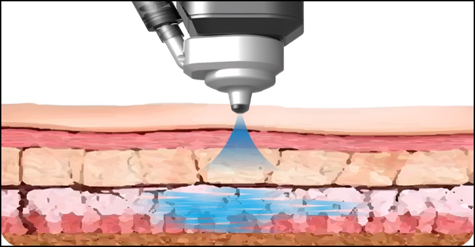
순간 분사
솔레노이드 기반의 고압 에너지가 약물을 순간적으로 분사합니다.
NEEDLE-FREE DRUG DELIVERY SYSTEM
Needle-free delivery.
40.68 MHz RF, together.
바늘 없는 정밀 약물 주입과 40.68 MHz 고주파를
하나의 장비에서 구현하는 이픈의 의료기기입니다.

ALL-JET OVERVIEW
ALL-JET은 솔레노이드 기반의 초고압 에너지를 이용해 약물을 마이크로젯 형태로 분사합니다. 약물 점도에 따라 150, 200, 250 μm 노즐을 선택하고, 40.68 MHz 고주파 핸드피스를 함께 사용하는 플랫폼입니다. 이중 냉각 구조는 냉각 대기 부담을 줄이고 연속적인 운영을 지원하도록 설계했습니다.
PRINCIPLE & TECHNOLOGY

솔레노이드 기반의 고압 에너지가 약물을 순간적으로 분사합니다.
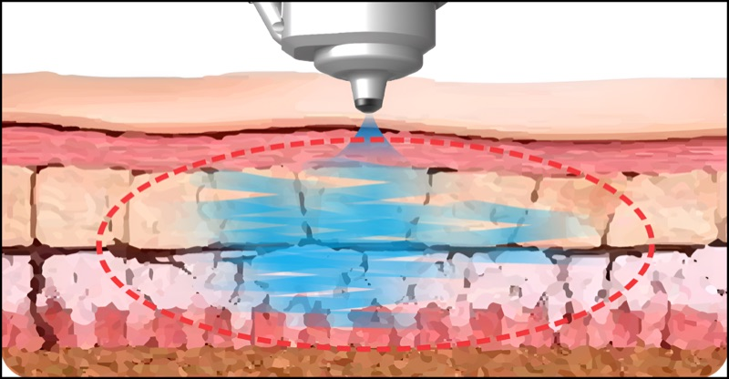
시술 목적에 따라 1–4 mm 범위의 피부층을 정밀하게 설정합니다.
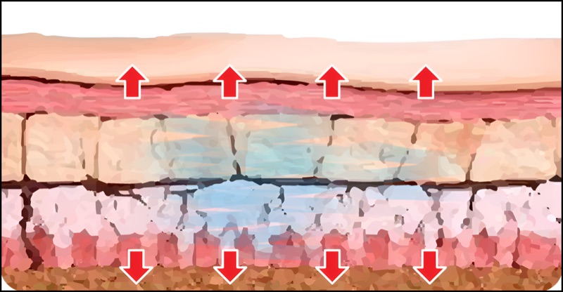
집중형 노즐 설계로 유효성분의 안정적인 전달을 고려했습니다.
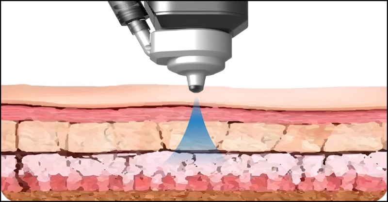
피부와 두피 등 다양한 적용 가능성을 하나의 플랫폼에서 확장합니다.
KEY FEATURES
정밀한 노즐 구조부터 연속 사용을 위한 냉각 시스템까지, 실제 사용 경험을 중심으로 설계했습니다.
PRECISION NOZZLE
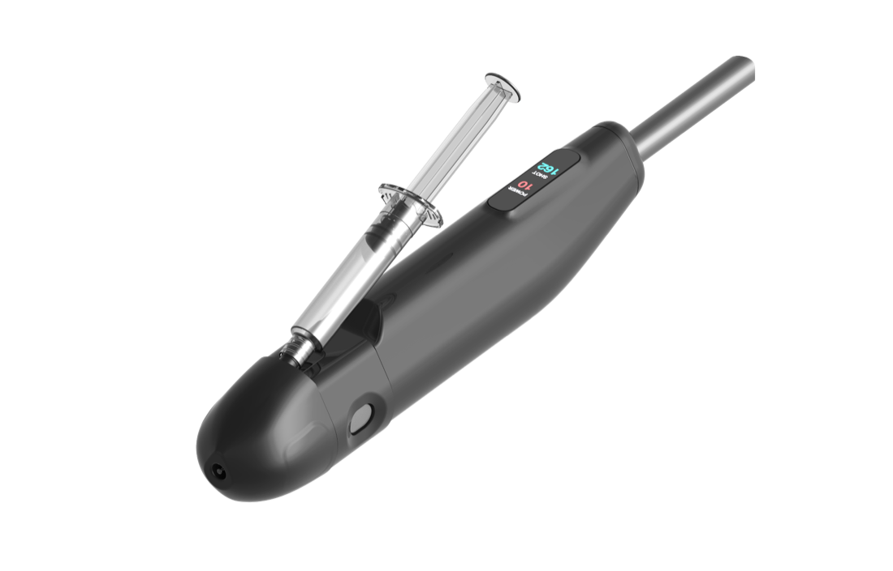
DELIVERY & RF
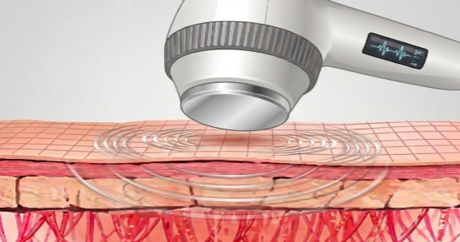
DUAL COOLING
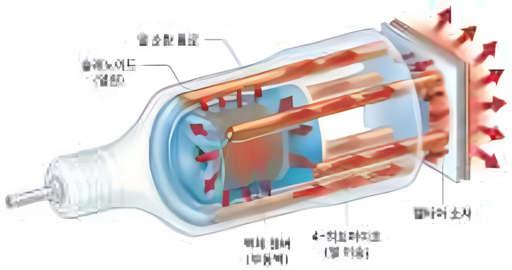
RFID CARTRIDGE
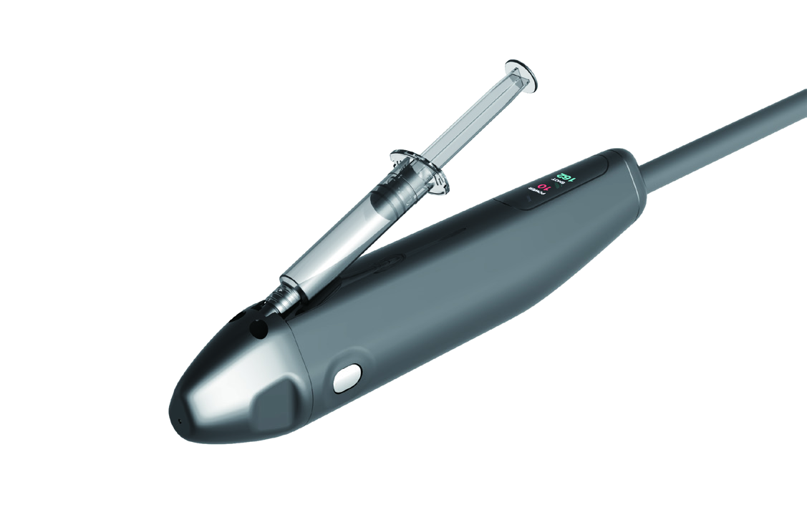
SPECIFICATIONS
개발 단계의 자료를 기준으로 하며, 최종 제품 및 인허가 과정에서 일부 변경될 수 있습니다.
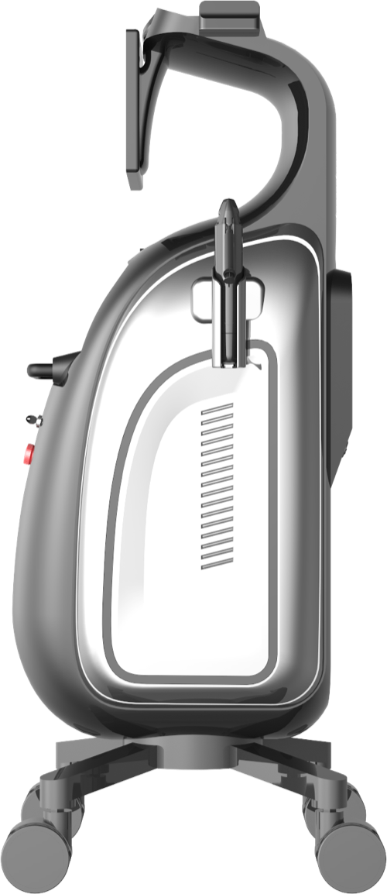
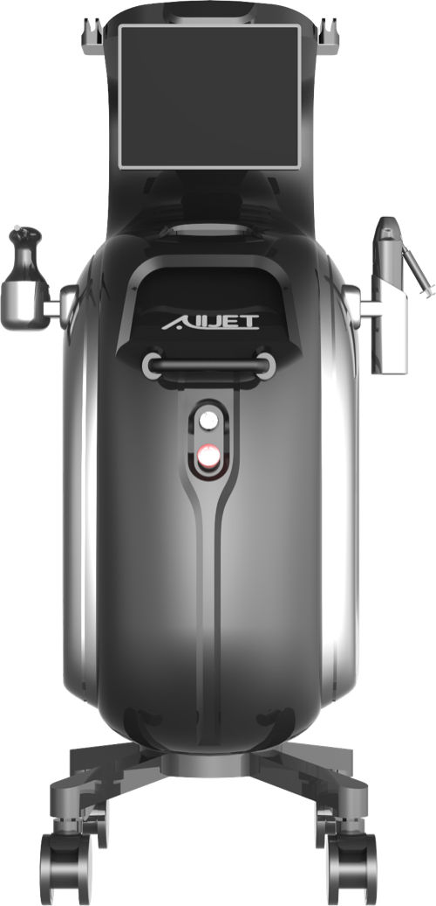
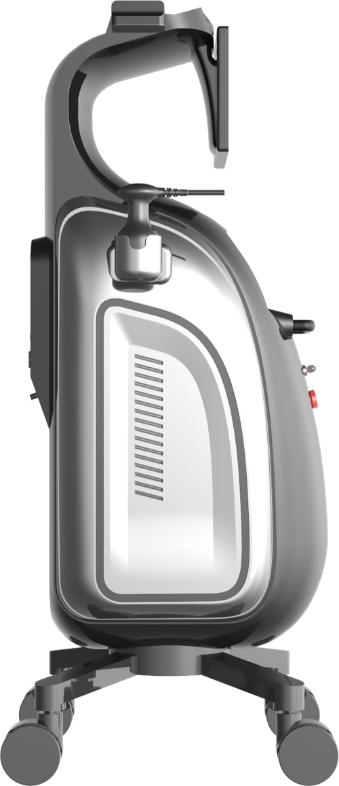

미용기기 · BEAUTY DEVICE
INVERA는 의료기기 ALL-JET과 같은 무바늘 정밀 분사 기술을 바탕으로 만든 미용기기입니다. 공통 기술을 피부케어의 새로운 가능성으로 연결합니다.